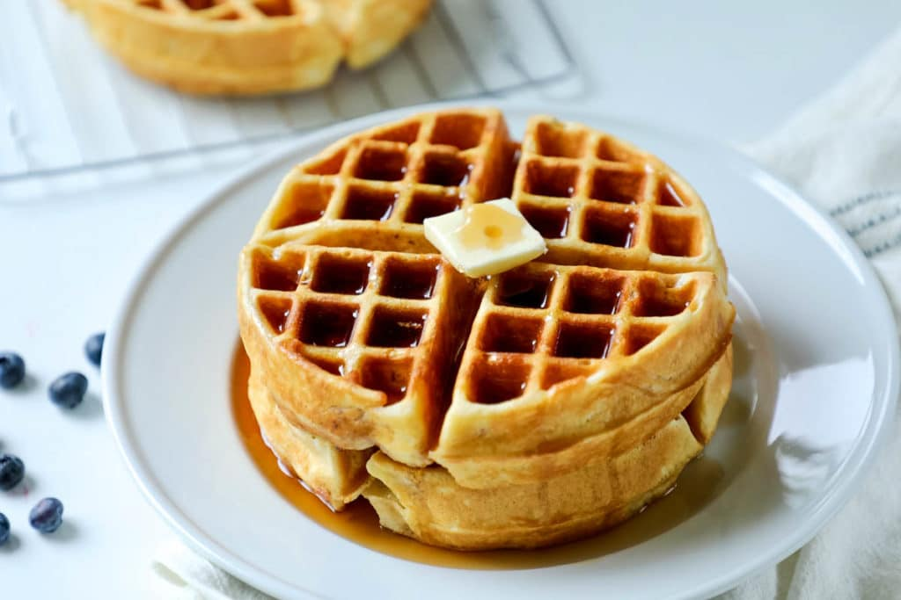

Waffles

Desciption
The crispier and more texturally complex cousin to the pancake, the noble waffle
has been a staple of the breakfast table for just as long. Coupled with a pat of butter
sweet maple syrup, the crsipy exterior and fluffy interior of a fresh waffle are had to match.
Toss out those freezer burned waffles, get yourself a waffle maker and take your breakfast
to the next level.
Ingredients
- 2 cups flour
- 1 tsp salt
- 4 tsp baking powder
- 2 tbsp white sugar
- 2 eggs
- 1 1/2 cups warm milk
- 1/3 cup melted butter or neutral oil
- 1 tsp vanilla extract
Directions
- Place all dry ingredients (flour, salt, baking powder, sugar) in large bowl and whisk together
- Crack the eggs into a separate bowl and beat until whites and yolks combined
- Add milk, melted butter/oil and vanilla to eggs (make sure milk is warm if using butter, otherwise it will clump)
- Whisk wet ingredients together
- Mix the wet ingredients into the dry until well blended
- Ladel or otherwise place batter into your preheated waffle iron (amount will depend on size of your waffle iron)
- Cook waffles until golden and crispy on the outside
- Serve immediately and top as desired.